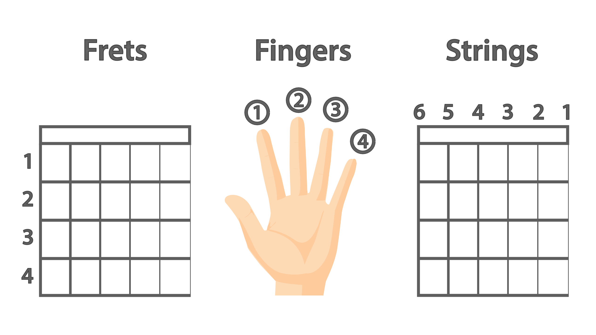
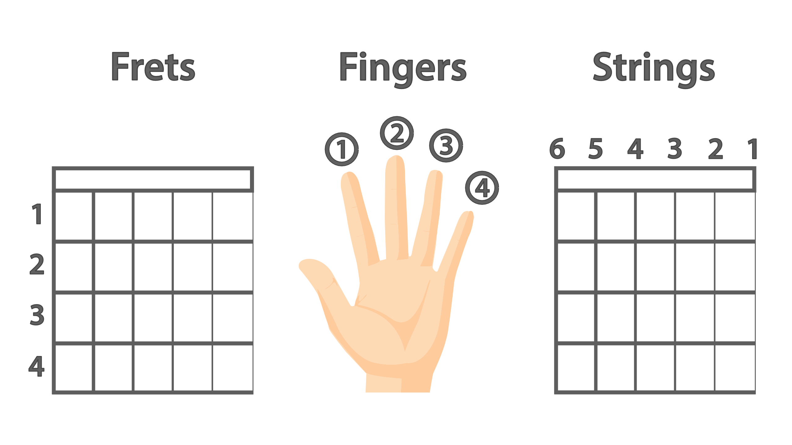

I am a Guitar Chord Generator!
Enter the chord you want to play and I will return a basic
fingering diagram:
How to interpret strings and fingering:

Chord: {{chordname}}
Fingering: {{fingering}}
On these strings: 6 5 4 3 2 1
At these frets: {{strings}}
Chord diagram:
 Chord diagram: Sorry, there is no diagram to display.
Chord diagram: Sorry, there is no diagram to display.
How to interpret strings and fingering:

Chord: {{chordname}}
Fingering: {{fingering}}
On these strings: 6 5 4 3 2 1
At these frets: {{strings}}
Chord diagram:

Chord diagram: Sorry, there is no diagram to display.